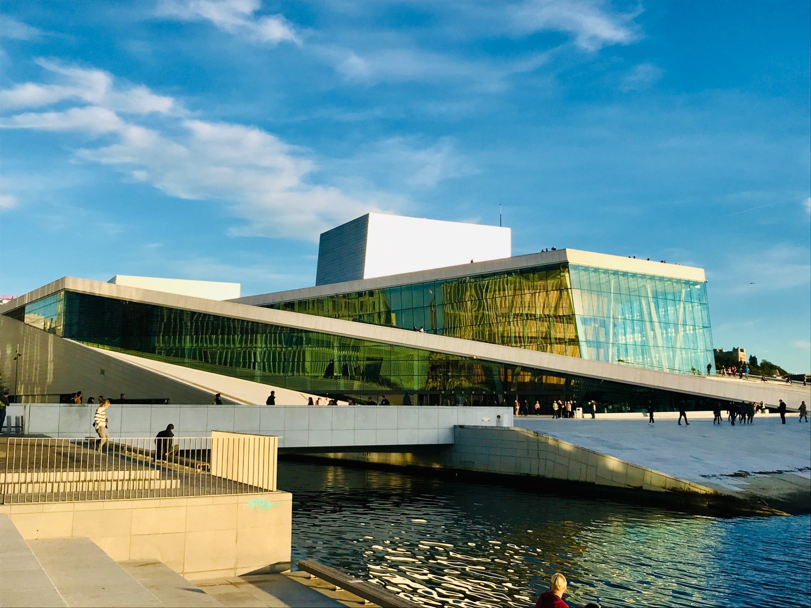
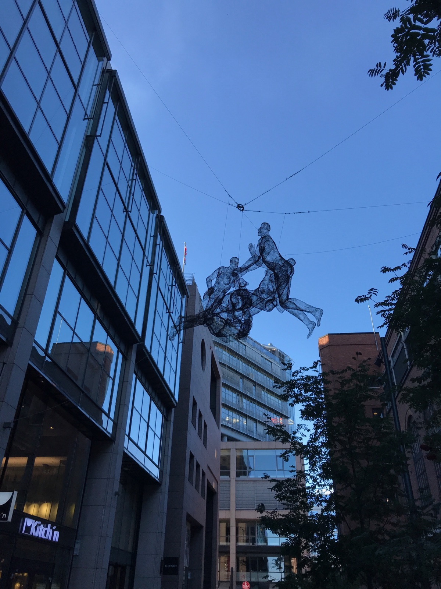

Right at Oslo Central Station with direct airport train access. Free breakfast buffet with allergen labels — Scandic labels GF items well, with GF bread and cereal available (ask staff to point out cross-contact-safe items in the shared buffet). Free WiFi and gym included.
Free Breakfast GF-Labeled Buffet Central Location Gym
Elegant seafood at Aker Brygge. GF brown bread offered. Seafood mains naturally GF. GF soup available — ask which ones, as some may use a flour-based thickener.
What to Order
Fresh seafood platters, GF soup, grilled fish. Ask for the GF brown bread.
Sashimi and nigiri with GF soy sauce. Stick to simple items without tempura or sauces.
Location
Steen & Strøm
Getting Around
T-bane (Metro)
5 lines covering Oslo. All converge at Jernbanetorget hub near Central Station. Runs 5:30am–1am.
Hub: Jernbanetorget
Trikk (Trams)
6 lines through central Oslo. Line 12 is especially useful for tourists — connects many key attractions.
Line 12 for sightseeing
Ruter App
Single app for all Oslo transit. Buy tickets before boarding — fines are steep if caught without one.
Download before arriving
Oslo Pass
24/48/72h pass with unlimited public transport plus free entry to 30+ museums and attractions.
Worth it for 2+ museums/day
Local Tip
Download the Ruter app before arriving — you can’t buy single tickets on board, and fines are steep. The Oslo Pass is worth it if you visit 2+ museums per day.
Landmarks & Must-See Spots
5 spots
The Vigeland Park
Nature
World's largest sculpture park by a single artist. Over 200 Gustav Vigeland bronze and granite sculptures in a stunning park setting. Free entry.
Frogner
Went here
Oslo Opera House
Historic
Stunning modern architecture rising from the harbor. Walk on the sloping marble roof for panoramic views of the Oslofjord and city skyline.
Bjørvika
Went here

Aker Brygge
Walk
Vibrant waterfront promenade with restaurants, shops, and views of the Oslofjord. The hub of Oslo's dining and nightlife scene.
Waterfront
Went here

Tjuvholmen Sculpture Park
Nature
Modern art sculptures on the harbor peninsula near Astrup Fearnley Museum. A free outdoor gallery with waterfront views.
Tjuvholmen
Went here
Ekebergparken
Nature
Sculpture park on a hillside with panoramic Oslo views. The spot that inspired Edvard Munch's The Scream. Free entry.
Ekeberg
Went here
Neighborhoods
Aker Brygge & Tjuvholmen
Refined waterfront
Oslo's upscale waterfront hub. Restaurants, galleries, and the Astrup Fearnley Museum cluster along the harbor. Highest concentration of GF-friendly restaurants in one area.
Grünerløkka
Trendy & creative
Oslo's hipster district. Vintage shops, street art, and the foodie-favorite Mathallen market. Home to Arakataka and Illegal Burger.
Sentrum
City center
Karl Johans gate, Oslo Cathedral, and the Royal Palace. The main shopping and transit hub with Baker Hansen, Yo! Sushi, and Deli de Luca nearby.
Frogner
Upscale & green
Embassy district, Vigeland Park, and leafy boulevards. Residential calm within easy reach of the center.
Things to Do
Oslo Highlights Bike Tour
Paid
Half-day guided bike tour through charming streets, past Aker Brygge, Akershus Castle, and the Royal Palace.
Yes. Meny has the best GF sections, followed by Kiwi, Coop Mega, Life (health food), and Helios in Gr\u00fcnerl\u00f8kka. Norway also has excellent naturally GF local foods like fresh seafood, brunost, and cloudberries.
Travel Tips
Baker Hansen is your best bet for quick GF baked goods — the dedicated GF bakery supplies all locations across Oslo
The Scandic Byporten breakfast is one of the better hotel buffets for celiacs — every item labeled for allergens, with a GF bread and cereal section
Oslo Pass saves money if you visit 2+ museums per day — buy online for immediate activation on the app
Aker Brygge has the highest concentration of GF-friendly restaurants — Olivia, Lofoten, Sjømagasinet, Louise, and Eataly are all within a 5-minute walk
Mathallen food hall in Grünerløkka is great for GF browsing — several stalls accommodate celiac needs
Avoid Eataly and Mamma Pizza if you're highly sensitive — cross-contamination is openly acknowledged by both venues
What I’d Do Differently
I'd spend more time in Grünerløkka — the neighborhood has the best food scene and Arakataka was a highlight of the trip.
Have a tip or comment?
Found a great GF spot in Oslo? I’d love to hear from you.